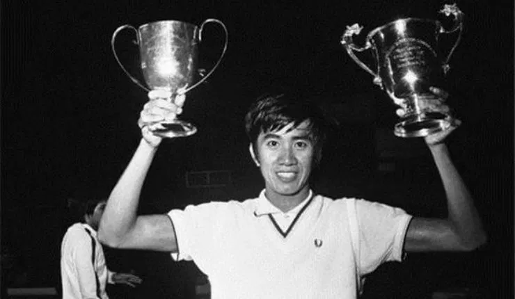
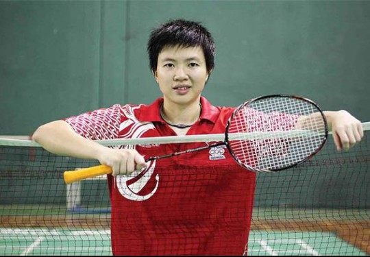
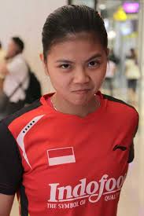

Bulutangkis merupakan salah satu olahraga yang disenangi oleh banyak orang indonesia. Bulutangkis juga merupakan olahraga favorit gue. Ya, gue menyukai bulutangkis sejak tahun 2012. Pemain bulutangkis favorit gue yaitu Liliyana Natsir dan Greysia Polii
Sejarah Bulutangkis Indonesia

Untuk di Indonesia sendiri, sejarah bulu tangkis sendiri dimulai pada tahun 1930-an.
Di masa itu, cabang olahraga ini ada di bawah
perkumpulan yang bernama Ikatan Sport Indonesia (ISI).
Namun bulu tangkis sempat dilupakan karena Indonesia menghadapi masa perang.Tetapi ketika Indonesia merdeka,
bulu tangkis kembali berkembang di tahun 1947. Perkembangan bulu tangkis sangat terlihat di tahun 1948
karena adanya kampanye yang dilakukan oleh Presiden Soekarno.
Kala itu, kampanye “Nation Building”, yakni gerakan dalam membangun bangsa benar-benar digalakkan.
Para pelaku olahraga Indonesia tak tinggal akan hal itu. Bulu tangkis pun menjadi cabor (cabang olahraga) yang diperkenalkan dalam kampanye itu. Bahkan janji Presiden Soekarno tak main-main, yaitu menjadikan Indonesia akan sukses berprestasi tingkat dunia.
Melalui Keppres No. 263/1953, Presiden Soekarno mencanangkan Indonesia bisa berada di posisi 10 besar dunia.
Tak main-main, harapan tersebut dapat diraih di tahun 1958. Ketika itu, Indonesia sukses menjuarai Thomas Cup di Singapura.
Hal itu menjawab tantangan negara-negara lain yang menganggap Indonesia hanyalah tim lemah.
Prestasi membanggakan itu diikuti oleh penerus-penerusnya hingga saat ini.
Biografi Liliyana Natsir

Liliyana Natsir bukanlah terlahir dari keluarga atlet bulu tangkis. Tapi mereka memiliki ketertarikan pada dunia olahraga, terutama bulu tangkis. Sejak duduk di sekolah dasar (SD), ia sudah mulai jatuh cinta pada olahraga yang terlihat dari nilai rapornya selalu bernilai 9.
Perempuan kelahiran Manado, 9 September 1985 ini mulai mengenal bulu tangkis ketika mulai mencoba-coba bermain di halaman rumahnya di Manado saat masih berusia 9 tahun.
Melihat minat sang putri di olahraga tepok bulu, Benno Natsir, ayah Liliyana, lantas memasukkannya ke PB Pisok Manado, klub bulu tangkis lokal. Di sana teknik bermainnya mulai terasah dan ia mulai mengukir prestasi untuk klub.
Tidak sedikit prestasi yang diraihnya kala itu. Medali emas kejuaraan lokal pernah disumbangkan untuk PB Pisok.
Setamat SD, muncul keputusannya untuk merantau ke Jakarta untuk mempertajam kemampuan bulu tangkisnya dengan bergabung ke PB Tangkas. Bukan sebuah keputusan yang mudah.
Saat itu, Liliyana masih berusia 12 tahun yang memutuskan untuk meninggalkan bangku sekolah di Manado. Sebagian keluarga besarnya menyesalkan keputusannya tersebut karena khawatir nasibnya apabila memutuskan untuk menjadi atlet.
Tapi keraguan orang-orang di sekitarnya tidak mengubah keputusannya. Baginya, hidup adalah pilihan dan kita harus menerima risiko. Apabila memilih salah satu, maka harus fokus, harus benar-benar serius, apapun itu hasilnya.
Dengan dukungan keluarganya, ia pun bertolak ke Ibu Kota untuk mendalami bulu tangkis. Setiba di Jakarta, sang mama menemaninya selama tiga bulan pertama. Ibunya memutuskan untuk kos dekat PB Tangkas agar bisa selalu menemani Liliyana di masa awal masuk asrama PB Tangkas.
Setelah tiga bulan ditemani sang ibu di Jakarta, ibunya kembali ke Manado untuk mengurus bisnis keluarga di bidang onderdil dan bengkel. Bungsu dari dua bersaudara yang terbiasa dengan ibunya ini pun menangis karena tidak ingin ditinggal. Tapi tekadnya menjadi atlet juga kuat.
Tidak mudah bagi Liliyana untuk tinggal di asrama di usia yang masih sangat belia. Tapi masa-masa berat itulah yang mampu menempa mentalnya menjadi lebih kuat. Seiring dengan perjalanan waktu, masalah rindu orang tua menjadi tantangan sekaligus motivasi bagi dirinya sendiri untuk berprestasi.
Nama lainnya yang melekat di media massa Indonesia adalah Butet. Nama itu dicetuskan oleh Muhrini, senior Liliyana berdarah Batak di PB Tangkas. Butet ini berarti anak perempuan paling kecil dan biasanya dipakai untuk si bungsu yang paling disayang.
Akhirnya nama itu terus melekat pada dirinya, bahkan menjadi yel-yel yang selalu diteriakkan suporter kala ia bertanding di Istora Senayan.
Biografi Greysia Polii

Greysia Polii Pebulu tangkis cantik, lucu, dan penuh semangat ini akrab dengan dengan nama Grace. Grace lahir di Jakarta pada 11 Agustus 1987, dari pasangan Willy Polii dan Evie Pakasi. Anak ke-3 dari 5 bersaudara ini menyukai bulu tangkis sejak usia lima tahun. Grace adalah salah satu pemain bulu tangkis Indonesia. Ia dikenal sebagai pemain bulu tangkis untuk kelas ganda putri maupun ganda campuran.
Greys dan keluarga awalnya tinggal di Manado kemudian mereka pindah ke Jakarta demi kepentingan karier Greys. Greys kemudian bergabung di pelatnas sejak tahun 2003 dan dilatih oleh Richard Mainaky and Aryono Miranat.